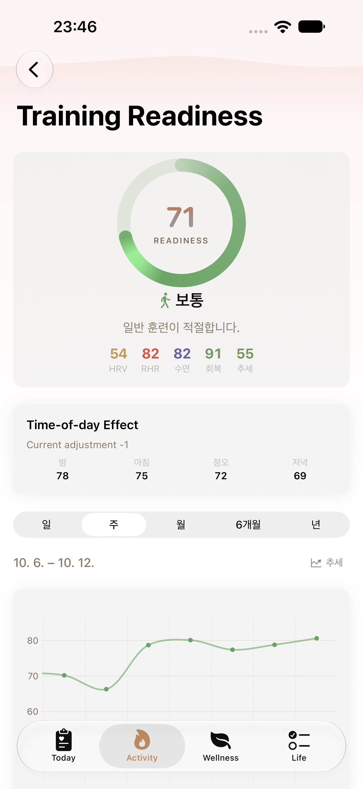
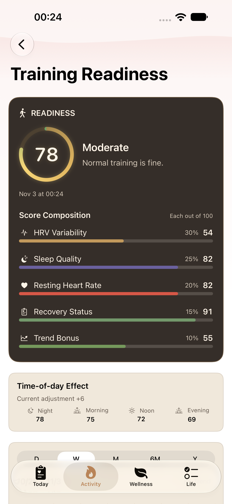
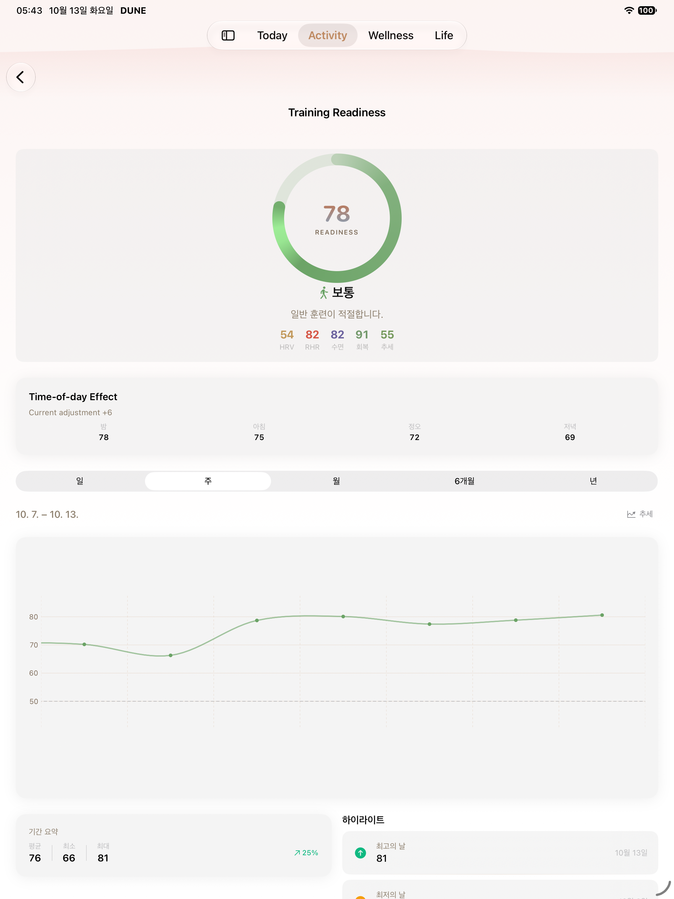
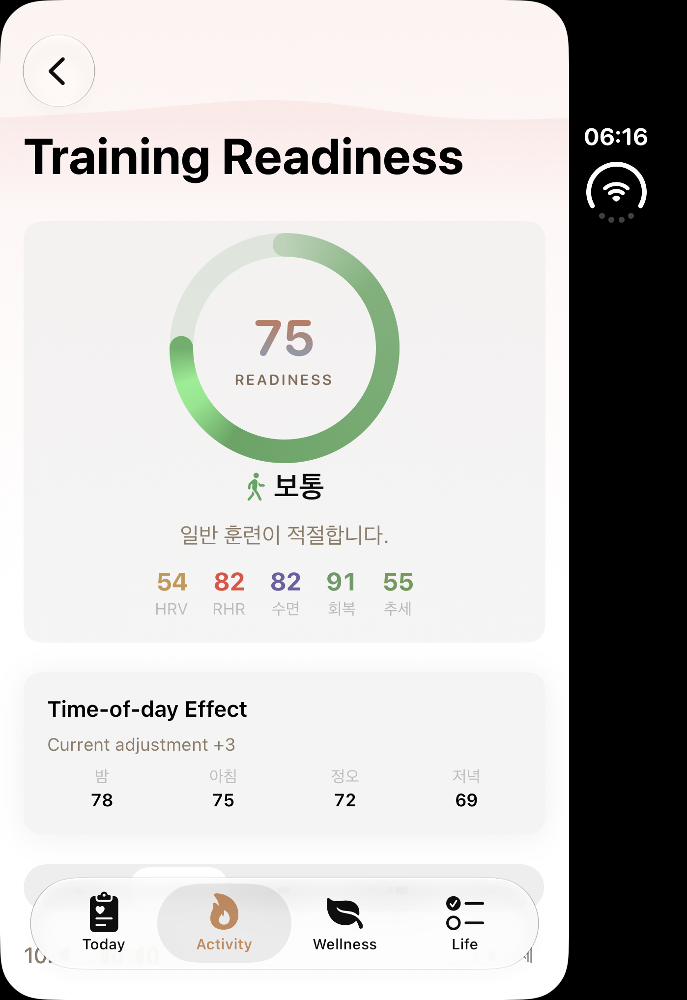
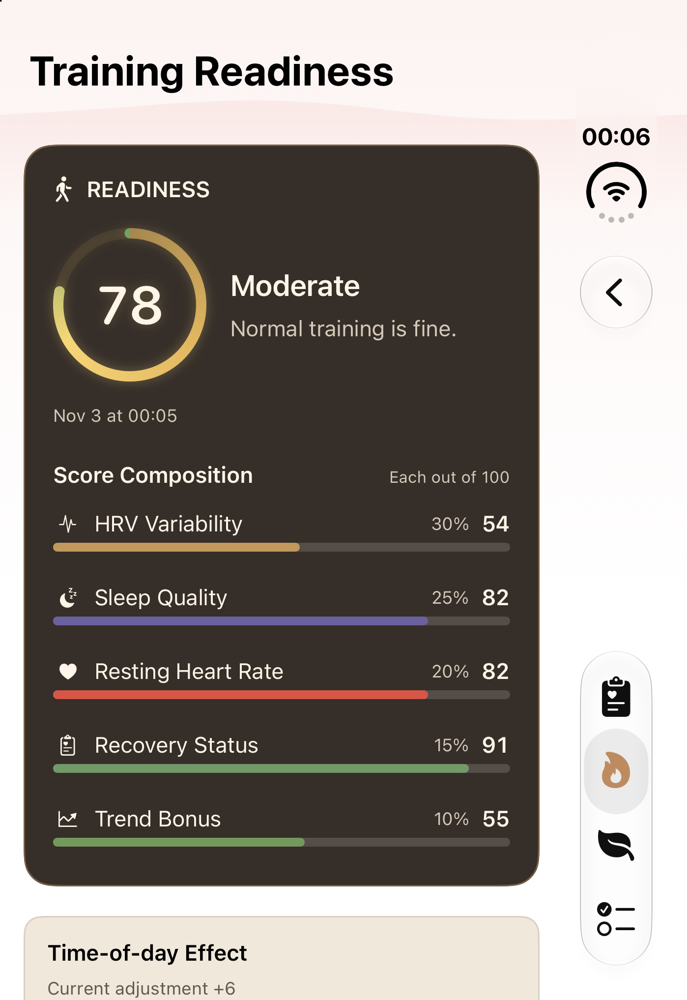
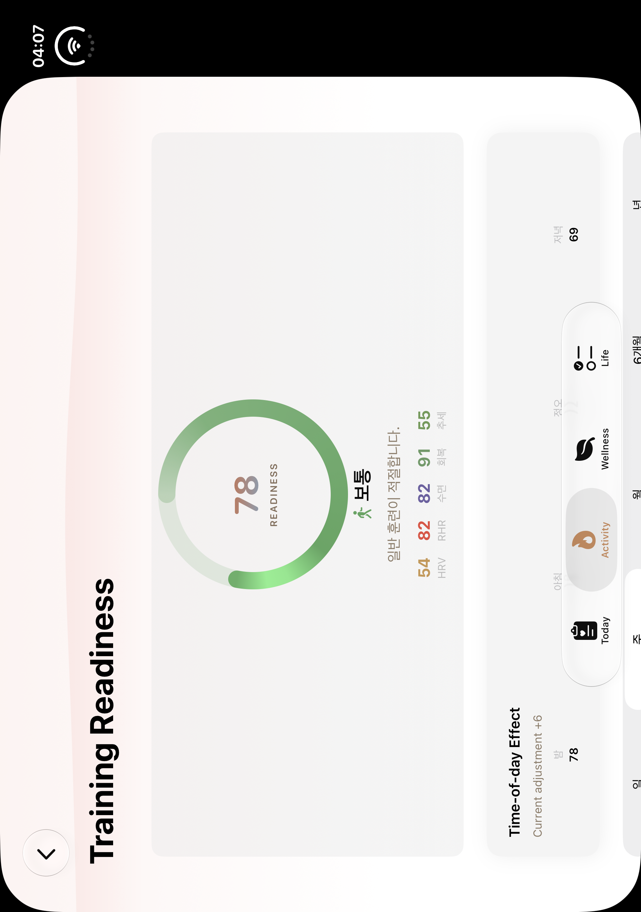
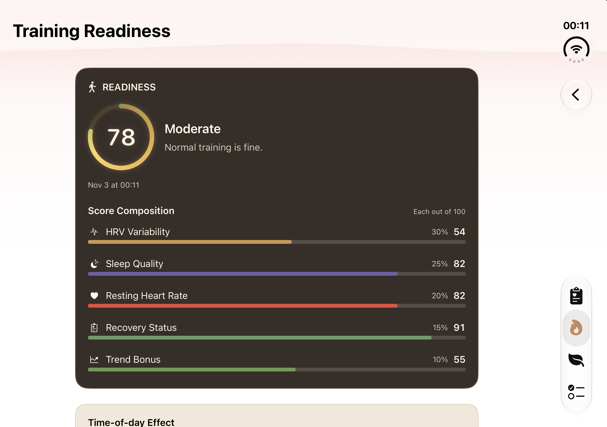
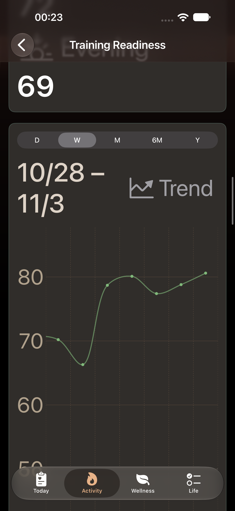
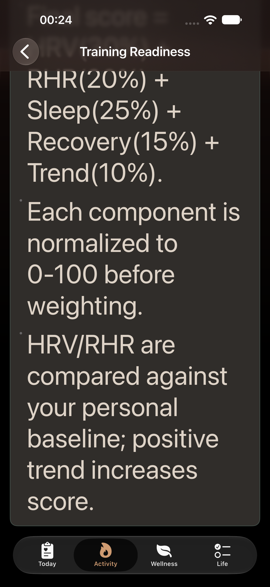

Publication state: A02_INSTALLED_FOUR_ROWS — installed=true; four A02 rows/images and Activity boards updated. Scoped final quality PASS WITH NOTES; architectureP3 duplicate mapping DEFERRED1. CI tracked separately; no allCIgreen claim.
before: Original canonical; exact source/pose unknown

actual original A02 normal screen; per-image revision/dirty/pose unknown
d100f370c178d70970a20b8c0066e1bf73a46a2c72b5faff8b7f3d135812b393after: Training readiness 78, Moderate

Normal initial detail viewport: all five actual factors visible; Night+6. Lower chart not simultaneously visible. Native Back returns Activity and detail disappears.
before: Original canonical; exact source/pose unknown

actual original A02 normal screen; per-image revision/dirty/pose unknown
bfe68d14248b36871273f6fc3b0e3fc08789d17f6baeca743b59b962672ad166after: Training readiness 72, Moderate
Normal initial detail viewport. Below-screen chart/subtrends not simultaneously visible; normal native route/period/composition/Back assertions passed.
before: Original canonical; exact source/pose unknown

actual original A02 normal screen; per-image revision/dirty/pose unknown
72a7ca1083b9f2545ff707b65470d4bacc7db9e29536c661fd2bb7d8e55cfdebafter: Training readiness 78, Moderate

Normal initial detail viewport. Below-screen chart/subtrends not simultaneously visible; normal native route/period/composition/Back assertions passed.
before: Original canonical; exact source/pose unknown

actual original A02 normal screen; per-image revision/dirty/pose unknown
ff9f9bd0e6c7cff9d7d62d79c43a83c0ad117d514ced9d5c21abba2e259b1669after: Training readiness 78, Moderate

Normal initial detail viewport. Below-screen chart/subtrends not simultaneously visible; normal native route/period/composition/Back assertions passed.
MAX initial hero score78/Moderate and date readable. Native large navigation title is ellipsized here; inline title fully visible after scroll. Composition continues below; not all factors visible at once.

MAX scrolled time-of-day/trend viewport. Native attachment name says hero and trend, but image does not show whole hero or whole plot simultaneously. Full inline Training Readiness title visible.

MAX final calculation paragraphs scrolled into view; real normalization/baseline text readable. Formula beginning above viewport. Not complete paragraph collection in one image.
Historical iPadMAX separate1/1PASS raw attachments retained with original manifest for exact detail/Back/teardown identities; never canonical normal replacements.